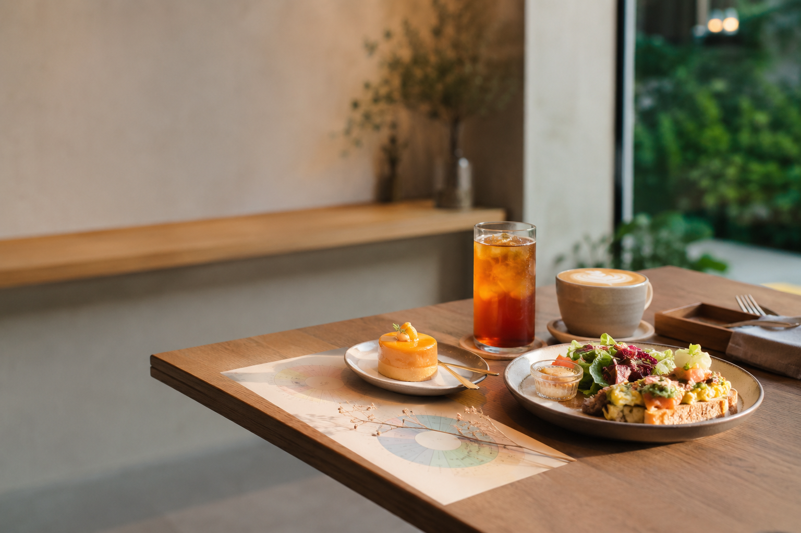

核心創新
把「今天很累、想喝點療癒的」這類抽象需求，轉換為茶香、甜度、濃郁度、清爽度等可分析的風味資料。

專案定位
Smart Feast 以 AI 語意解析、情境詞庫、飲食風味輪與內容式推薦為核心，同時支援 B2C 消費者推薦體驗與 B2B 業者研發洞察。
輸入自然語句或快速情境。
解析情境並映射風味輪。
輸出飲品與甜點／餐食。
回饋累積成研發方向。
功能入口
首頁保留專案敘事，六大功能則以跳轉畫面呈現，方便評審逐一操作與理解。
專案介紹
智能饗宴 Smart Feast－AI 情境餐飲搭配與風味趨勢研發系統，聚焦消費者餐飲選擇障礙與餐飲業者新品研發缺乏即時需求資料的問題。系統以一句自然語言作為入口，將心情、場合、偏好與低負擔等需求轉譯成風味參數，再推薦適合的飲品、甜點或餐食搭配。
不同於一般點餐網站，Smart Feast 不只協助消費者更快選到餐點，也把前台互動、點選、回饋與購買意願整理成後台洞察，讓業者看見熱門情境、風味趨勢、搭配機會與產品缺口，進一步支援新品研發與行銷決策。
把「今天很累、想喝點療癒的」這類抽象需求，轉換為茶香、甜度、濃郁度、清爽度等可分析的風味資料。
以 LLM 語意解析、情境語意詞庫、飲食風味輪、內容式推薦與資料視覺化組成 MVP，初期不依賴大量歷史資料也能落地展示。
B2C 提升消費者選擇體驗，B2B 則把隱性需求轉為研發洞察，支援組合套餐、情境菜單與新品方向討論。
一句心情 → 風味轉譯 → 搭配推薦 → 使用回饋 → 新品洞察
一、前台介面規劃
此區模擬消費者前台，可輸入任意情境，也可點選常見情境按鈕，系統會即時更新推薦、標籤與風味參數。
AI 解析結果
飲品
甜點／餐食
風味輪會依據推薦結果同步更新，協助評審快速理解「抽象情境」如何被轉成可計算的味覺參數。
系統判斷語句中包含壓力、療癒與低甜需求，因此選擇茶香明顯、甜度中低且收尾清爽的搭配。
二、後台儀表板規劃
前台點選與回饋會回流到後台，形成業者可讀的情境需求、熱門搭配與產品缺口。
三至五、核心資料庫
資料庫以 MVP 可落地為前提，先用標籤、詞庫與內容式規則完成推薦，再逐步擴充為更完整的資料分析系統。
六、新品研發建議模組
此模組將「消費者想要什麼」轉成業者可執行的新品概念、搭配邏輯與測試重點。
建議方向
針對「療癒但低負擔」需求，設計茶香明確、甜度較低、尾韻清爽的飲品與輕甜點組合。